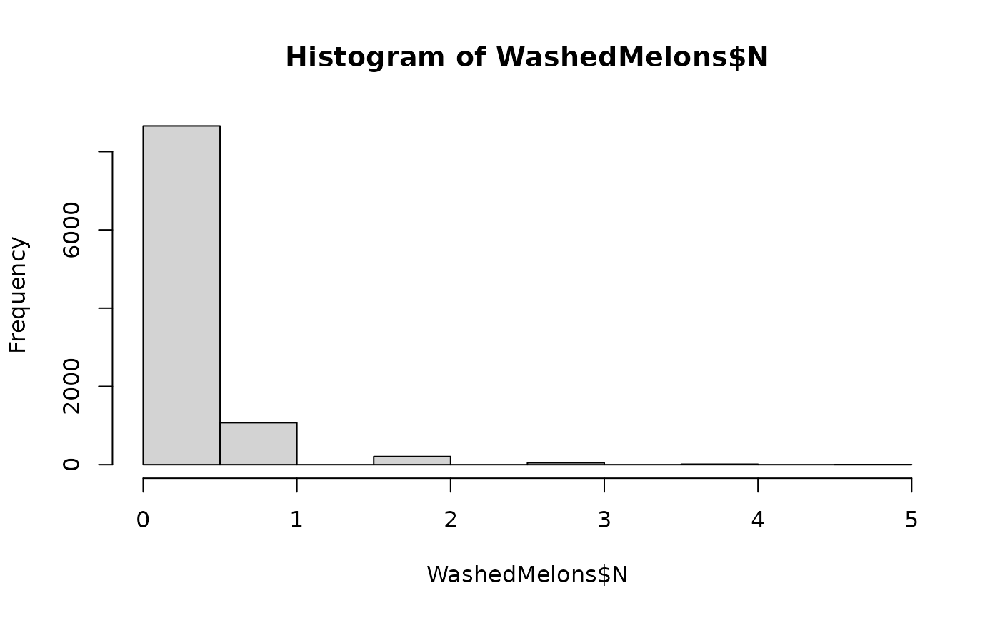

The function caFlumeTank() simulates three events taking place during flume tank washing:
the washing of bacteria off the cantaloupe rind at a washing efficiency of
logDecWash;the elimination of bacteria in the sanitising water at a sanitising efficiency of
log10SaniWash; andthe redistribution of survivors on the cantaloupe rind.
Usage
caFlumeTank(
data = list(),
logDecWash,
logDecSani,
b,
nLots = NULL,
sizeLot = NULL
)Arguments
- data
a list of:
N(
CFU) A matrix of sizenLotslots bysizeLotunits representing the numbers of L. monocytogenes on the rind, from contaminated cultivation lots;PPrevalence of contaminated harvested lots pre-washing (scalar).
- logDecWash
(log10) Reduction attained by washing (scalar or vector).
- logDecSani
(log10) Reduction attained by sanitising water (scalar or vector).
- b
Dispersion factor representing the clustering of surviving cells during redistribution (scalar, vector or matrix).
- nLots
Number of harvested lots of cantaloupe.
- sizeLot
Number of cantaloupes in a harvested lot.
Value
A list of two elements of the data objects:
N(
CFU) A matrix of sizenLotslots bysizeLotunits representing the numbers of L. monocytogenes on washed cantaloupes.PPrevalence of contaminated harvested lots post-washing (scalar).
Note
Since surviving cells are distributed in water, a value of b higher than 1 should be used to assume
random homogeneous distribution. This dispersion factor is a parameter of the beta-binomial
distribution (Nauta (2005)
).
References
Pouillot R, Delignette-Muller M (2010). “Evaluating variability and uncertainty in microbial quantitative risk assessment using two R packages.” International Journal of Food Microbiology, 142(3), 330-40.
Team RC (2022). R: A Language and Environment for Statistical Computing. R Foundation for Statistical Computing, Vienna, Austria. https://www.R-project.org/.
Nauta MJ (2005). “Microbiological risk assessment models for partitioning and mixing during food handling.” International Journal of Food Microbiology, 100(1), 311–322. doi:10.1016/j.ijfoodmicro.2004.10.027 .
Author
Regis Pouillot rpouillot.work@gmail.com
Examples
library(extraDistr)
library(mc2d)
#> Loading required package: mvtnorm
#>
#> Attaching package: ‘mc2d’
#> The following objects are masked from ‘package:extraDistr’:
#>
#> dbern, ddirichlet, dtriang, pbern, ptriang, qbern, qtriang, rbern,
#> rdirichlet, rtriang
#> The following objects are masked from ‘package:base’:
#>
#> pmax, pmin
dat <- caPrimaryProduction(
nLots = 100,
sizeLot = 100,
cantaWeight = 800,
pSoil = 0.089,
pManure = 0.1,
pIrrigRaining = 0.05,
pFoil = 0.5,
rFoil = 0.75,
pIrrig = 0.131
)
WashedMelons <- caFlumeTank(dat,
logDecWash = 1.5,
logDecSani = 2,
b = 2.5,
nLots = nLots,
sizeLot = sizeLot
)
hist(WashedMelons$N)
